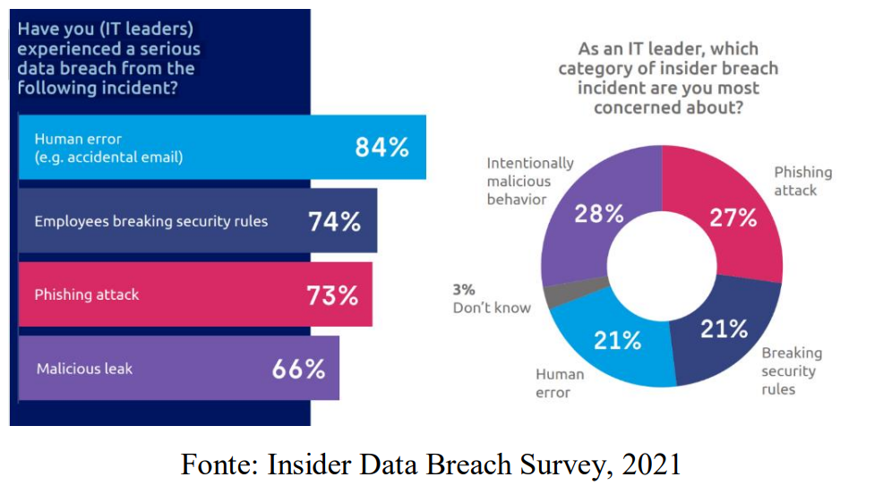

Desafios dos Profissionais de TI: Relações entre LGPD e Tecnologia
Resumo:
A LGPD apresenta desafios para os profissionais de TI, pois exige uma mudança cultural e não se limita apenas a questões estruturais. É necessário combinar as questões humanas e de infraestrutura para criar um plano de ação que escolha priorize a melhoria da gestão dos dados e promova uma cultura de valorização das informações. Os profissionais de TI precisam estar preparados e bem informados sobre a lei. A combinação de pesquisa bibliográfica e pesquisa de campo fornece estrutura teórica e prática para lidar com os desafios da LGPD.
Palavras-Chave:
LGPD, privacidade, segurança, TI.
Abstract:
The LGPD presents challenges for IT professionals as it requires a cultural shift and goes beyond structural issues. It is necessary to combine human and infrastructure matters to create na action plan that prioritizes the improvement of data management and promotes a culture of information value. IT professionals need to be prepared and well-informed about the law. The combination of bibliographic research and field research provides both theoretical and practical framework to address the challenges of LGPD.
Keywords:
LGPD, privacy, security, IT.
1. Introdução
A Lei Geral de Proteção de Dados (LGPD) aparentemente traz muitos desafios para profissionais de segurança de dados pessoais. A procura por métodos de segurança da informação tornou-se intensa, consequentemente exigindo melhorias nas ferramentas já existentes. É de grande importância a aprimoração das mesmas para garantir a integridade e disponibilidade de dados, com intuito de diminuir os riscos de segurança.
Portanto, é de extrema urgência também a conscientização dos colaboradores sobre a responsabilidade para trabalhar com as informações. A lei exige a transparência no tratamento de dados de terceiros, e a missão da equipe de TI é organizar o entendimento de dados em todo seu ciclo de existência.
O objetivo deste artigo é averiguar e exibir os impactos das normas da LGPD para os profissionais de TI e como eles lidarão com as mudanças. Será preciso passar por desafios por adaptações e processos existentes, garantindo o cumprimento da lei.
2. Fundamentação Teórica
2.1. Privacidade e Segurança de Dados
A relação entre privacidade e segurança de dados está interligada, pois a privacidade se refere à esfera íntima de uma pessoa, por outro lado, a segurança de dados procura garantir que as informações pessoais sejam tratadas adequadamente, com respeito aos direitos individuais e evitando violações. No entanto, o avanço tecnológico torna os dados pessoais vulneráveis. Podem ser coletadas de várias formas, como interações sociais e aberturas de contas em serviços. Assim, a legislação de proteção de dados procura equilibrar o poder sobre as informações pessoais, estabelecendo padrões para garantir o direito de liberdade, privacidade e segurança de informações de cada indivíduo.
2.2. Desafios da TI para Atendimento à LGPD
A LGPD traz desafios significativos para profissionais de TI. O primeiro deles é entender os princípios e requisitos da lei, o que requer também uma avaliação minuciosa para identificar as vulnerabilidades. Outro desafio seria o fluxo de informações dentro da empresa. A equipe de TI deve cooperar para saber como é feito o tratamento de dados,garantindo a conformidade com a legislação.
Armazenamento de dados também é considerado um desafio. É necessário investir em ambientes de armazenamento e back-up seguros. A elaboração de um Plano de Recuperação de Desastres é outro desafio importante, pois visa restaurar os dados, processos e sistemas, contemplando atitudes para serem adotadas em um desastre, permitindo a continuidade de serviços de TI para o negócio.
2.3. Ferramentas e Soluções para Adequação à LGPD
3. Metologia
Esse trabalho foi feito como uma pesquisa descritiva usando métodos de pesquisa em várias fontes, como artigos científicos e publicações em sites. Essa estrutura abrange os desafios da TI para o comprometimento com a Lei Geral de Proteção de Dados e as soluções para estar de acordo com a lei. Para avaliar as causas mais comuns de violações de dados, foi feita a pesquisa, conforme exibido abaixo, segundo o “Insider Data Breach Survey”, feito no ano de 2021, e os resultados foram analisados, com o objetivo de identificar os principais fatores que consequentemente acabaram em apropriação indevida de dados, e quais desses fatores eram mais preocupantes para líderes de TI.

5. Considerações Finais
O avanço da tecnologia e a digitalização do mundo fizeram da informação uma moeda de troca importante. É necessário estabelecer normas para proteção de dados e privacidade. Conclui-se que os profissionais de TI desempenham um papel fundamental para o sucesso no processo de adequação à LGPD, portanto, precisam estar bem capacitados para implementar as mudanças necessárias. A conscientização e o treinamento adequado dos profissionais são essenciais para a segurança dos dados. As organizações devem investir em soluções de cibersegurança e armazenamento de dados para garantir o sucesso do negócio.